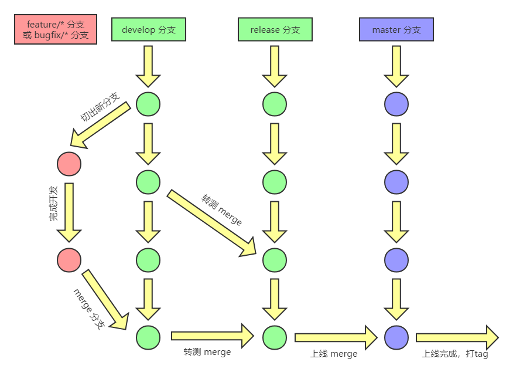
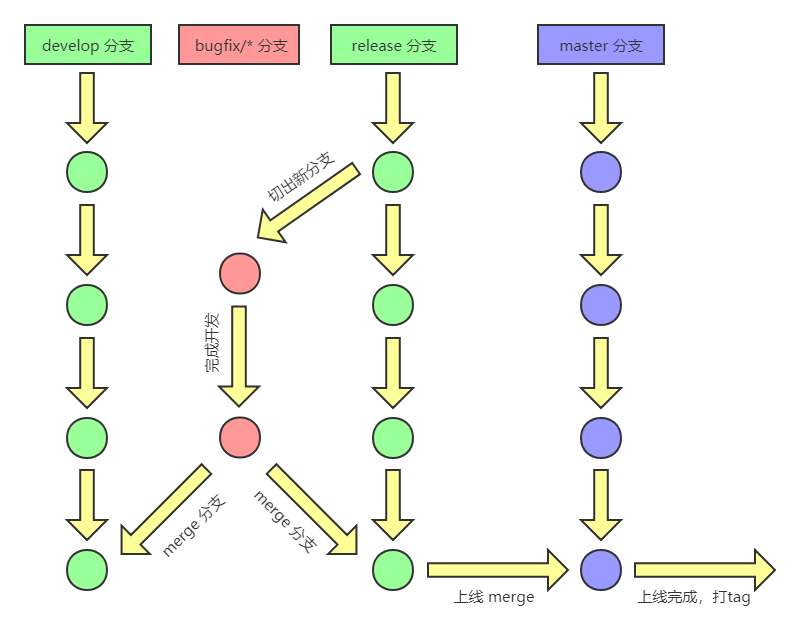
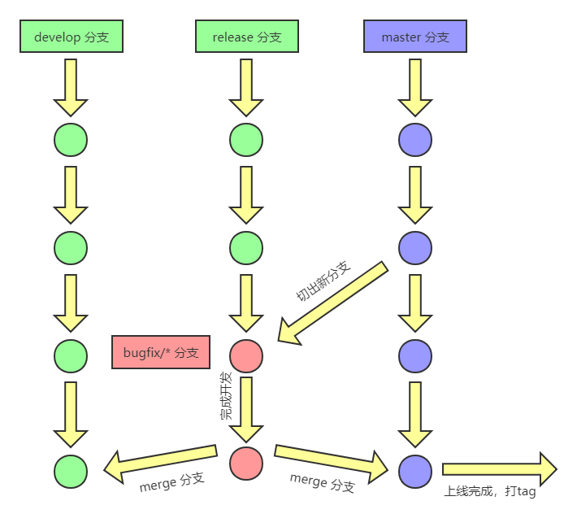

许多公司的开发团队都采用 Git 来做代码版本控制。如何有效地协同开发人员在开发、测试、上线各个环节的工作，可能都有各自的流程与规范。本文就分享作者一直沿用的团队项目 Git 分支管理规范，希望给有缘阅读的人加以参考，如果有更好的实践，也欢迎探讨、交流，谢谢！
分支管理
分支说明
创建项目时，会针对不同环境创建几个常用分支：
- master：主分支，负责记录上线版本的迭代，该分支代码与线上代码是完全一致的。
- develop：开发分支，该分支记录相对稳定的版本，所有的
feature分支和bugfix分支都从该分支创建。 - release：发布分支，用于代码上线准备，该分支从
develop分支创建，创建之后由测试人员发布到测试环境进行测试，测试过程中发现 bug 需要开发人员在该release分支上进行 bug 修复，修复完成自测没问题后，在上线之前，需要合并该release分支到master分支，同时需要再合并该分支到develop分支。
平时开发工作中，会根据需要由开发人员创建几类临时分支：
- feature：特性（功能）分支，用于开发某个特定的功能，该分支从
develop分支创建，不同的功能创建不同的功能分支，开发完成自测没问题后，需要合并该分支到develop分支，之后删除该分支。 - bugfix：bug 修复分支，用于修复某个普通的 bug，该分支从
develop分支创建，修复完成自测没问题后，需要合并该分支到develop分支，之后删除该分支。 - hotfix：热修复分支，用于修复某个紧急的 bug，该分支只有在紧急情况下使用，该分支从
master分支创建，用于紧急修复线上的 bug，修复完成自测没问题后，需要合并该分支到master分支，以便上线，同时需要再合并该分支到develop分支，之后删除该分支。
分支命名规范
特性（功能）分支
该分支的分支名称应该为描述该功能的英文简称：
1 | feature/分支名称 |
例如，开发的功能为“新增商品到物料库”，则可以创建一个名为 feature/material-add 的分支。
bug 修复分支、热修复分支
该分支的名称应该为 Jira 中 bug 代码或者是描述该 bug 的英文简称：
1 | bugfix/分支名称 |
比如，修复的 bug 在 jira 中代号为 MATERIAL-1，则可以创建一个名为 bugfix/MATERIAL-1 的分支。
发布分支
该分支的名称应该为本次发布的主要功能英文简称：
1 | release/分支名称 |
比如，本次上线的功能为“新增商品到物料库”，则可以创建一个名为 release/material-add 的分支。
流程规范
正常开发流程
- 从
develop分支切出一个新分支，根据是功能还是 bug，命名为 feature/* 或 bugfix/* 分支。 - 开发者完成开发，提交该分支到远程仓库。
- 开发者发起
merge request请求（可在gitlab页面New merge request），将新分支请求合并到develop分支，并提醒组长或同事进行code reviewer。 code reviewer后，若无问题，则接受merge request，并将新分支合并到develop分支，同时可以删除新建分支；若有问题，则不能进行合并，可close该请求，同时通知开发者在新分支上进行相应调整，调整完后提交代码，重复code reviewer流程。- 转测时，直接从当前
develop分支合并到release分支，重新构建测试环境，完成转测。 - 测试完成后，从
release分支合并到master分支，基于master分支构建生产环境完成上线，并对master分支打tag，tag名可为v1.0.0_2019032115（即：版本号_上线时间）。
流程示意图如下：

并行开发测试环境 Bug 修复流程
并行开发（即前一个版本已经转测但未上线，后一个版本又已在开发中并部分合并到了 develop 分支）过程中，转测后测试环境发现的 bug 需要修复，但是 develop 分支此时又有新内容且该部分内容目前不计划转测，可以从 release 切出一个 bug 修复分支，完成之后需要同时合并到 release 分支与 develop 分支，合并时参考“正常开发流程”。
流程示意图如下：

生产环境 Bug 修复流程
生产环境的 Bug 分两种情况：
- 紧急 Bug：严重影响用户使用的为紧急 Bug，需立即进行修复,如关键业务流程存在问题，影响用户正常的业务行为。
- 非紧急 Bug 或优化：非关键业务流程问题，仅影响用户使用体验，或出现频率较小等，为非紧急 Bug，可规划到后续版本进行修复。
非紧急 Bug 修复参考“正常开发流程”。
紧急 Bug 修复，需要从 master 分支切出一个紧急 bug 修复分支，完成之后需要同时合并到 master 分支与 develop 分支（如果需要测试介入验证，则可先合并到 release 分支，验证通过后再合并到 master 分支上线），合并时参考“正常开发流程”。
流程示意图如下：
